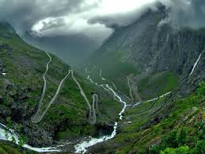

Muzaffarabad
Muzaffarabad is a city in Pakistani-administered Azad Kashmir in the disputed Kashmir region. It is the largest city and the capital of Azad Kashmir, which is a Pakistani-administered administrative territory. The city is located in Muzaffarabad District, near the confluence of the Jhelum and Neelum rivers. The district is bounded by the Pakistani province of Khyber Pakhtunkhwa in the west, the Kupwara and Baramulla districts of Indian-administered Jammu and Kashmir in the east, and the Neelum District in the north.Click For More Details
RawalaKot
On 15 June 1947, Sardar Ibrahim Khan addressed a meeting in Rawalakot attended by 20,000 people, and gave a speech telling his audience that Pakistan, a Muslim state, was coming into being and the people of Jammu and Kashmir could not remain unaffected. After that day, he says, "a strange atmosphere took the place of the usually peaceful life in these parts".On 22 June, Chaudhary Hamidullah, the acting president of the Muslim Conference, visited Rawalakot and initiated secret plans to organise the ex-servicemen of the district for an eventual confrontation with the Dogra State Forces. On or around 6 October, the armed rebellion started in the Poonch district. Click For More Details

MirPur
Mirpur officially known as New Mirpur City , is the capital of Mirpur district located in Azad Kashmir, Pakistan which has been subject of the larger Kashmir dispute between Pakistan and India since 1947. It is the second largest city of Azad Kashmir and the 74th largest city in Pakistan. A significant portion of the population from the district, the Mirpuri diaspora, migrated to the United Kingdom in the mid-to-late 1950s and in the early 1960s, mostly to West Yorkshire, East and West Midlands, Birmingham, Luton, Peterborough, Derby and East London. Mirpur is thus sometimes known as "Little England". Many British products are found, and many shops in the city accept the pound sterling. Click For More Details
Kel
Private hotels and a rest house, run by AJK Tourism and Archaeology Department, are available for tourists. It has a branch of Habib Bank Limited, boys and girls degree colleges, Tehsil Headquarter hospital and a bazaar.Private hotels and a rest house, run by AJK Tourism and Archaeology Department, are available for tourists. It has a branch of Habib Bank Limited, boys and girls degree colleges, Tehsil Headquarter hospital and a bazaar. Click For More Details